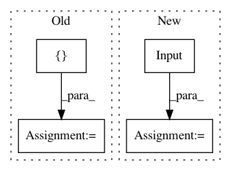

2e3ecf5ad4817912b14f8e17625aaa24185081c6,tests/autokeras/hypermodels/wrapper_test.py,,test_structured_data_block,#,33
Before Change
hp = kerastuner.HyperParameters()
block = graph_module.deserialize(graph_module.serialize(block))
block.column_names = ["0", "1"]
block.column_types = {
"0": adapters.CATEGORICAL,
"1": adapters.CATEGORICAL,
}
After Change
"0": adapters.NUMERICAL,
"1": adapters.NUMERICAL,
}
outputs = utils.block_basic_exam(
block,
tf.keras.Input(shape=(2,), dtype=tf.string),
[],
)
assert isinstance(nest.flatten(outputs)[0], tf.Tensor)
def test_timeseries_block():
In pattern: SUPERPATTERN
Frequency: 3
Non-data size: 4
Instances
Project Name: keras-team/autokeras
Commit Name: 2e3ecf5ad4817912b14f8e17625aaa24185081c6
Time: 2020-05-20
Author: jin@tamu.edu
File Name: tests/autokeras/hypermodels/wrapper_test.py
Class Name:
Method Name: test_structured_data_block
Project Name: keras-team/autokeras
Commit Name: 2e3ecf5ad4817912b14f8e17625aaa24185081c6
Time: 2020-05-20
Author: jin@tamu.edu
File Name: tests/autokeras/hypermodels/wrapper_test.py
Class Name:
Method Name: test_timeseries_block
Project Name: keras-team/autokeras
Commit Name: 0a80b9769115d291f15c244429793eda4cb8ecad
Time: 2017-12-28
Author: jhfjhfj1@gmail.com
File Name: tests/test_layer_transformer.py
Class Name:
Method Name: test_conv_to_wider_layer